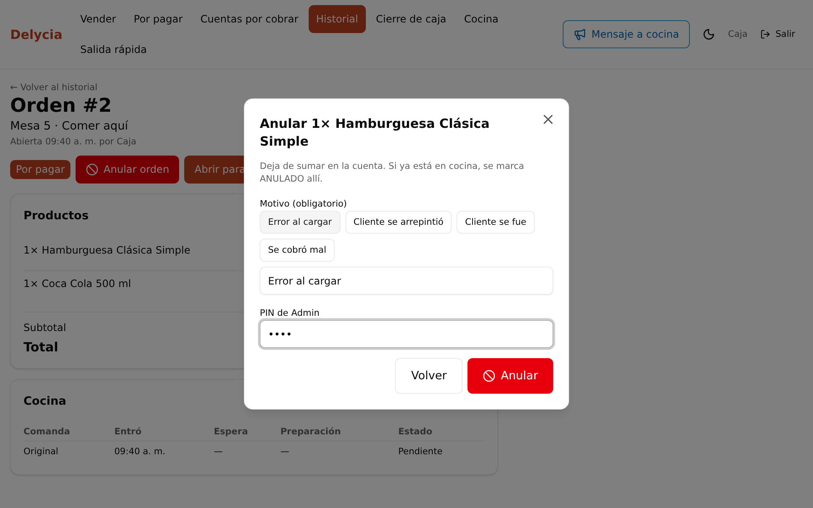
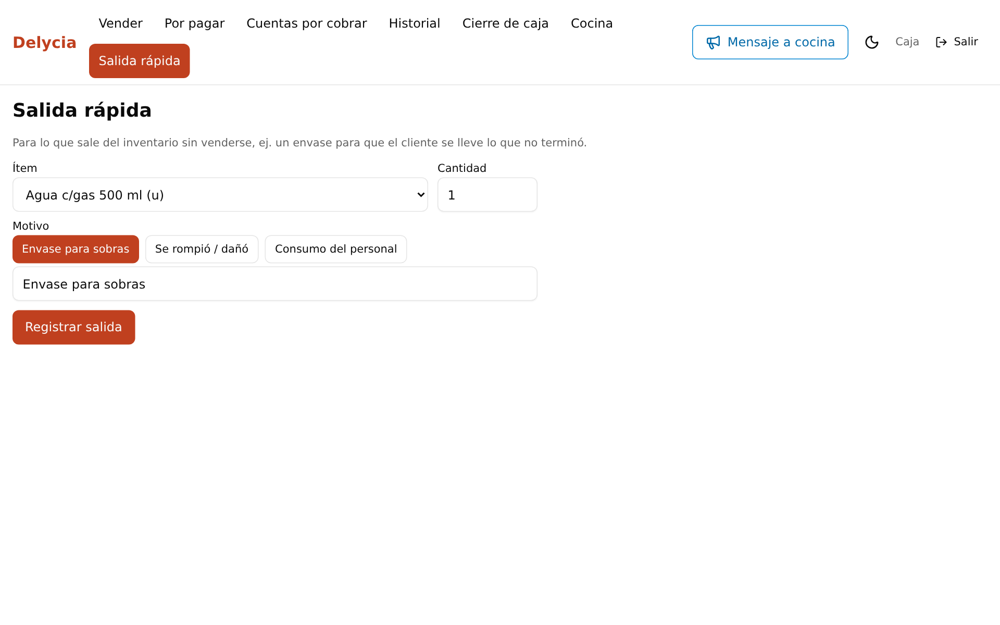
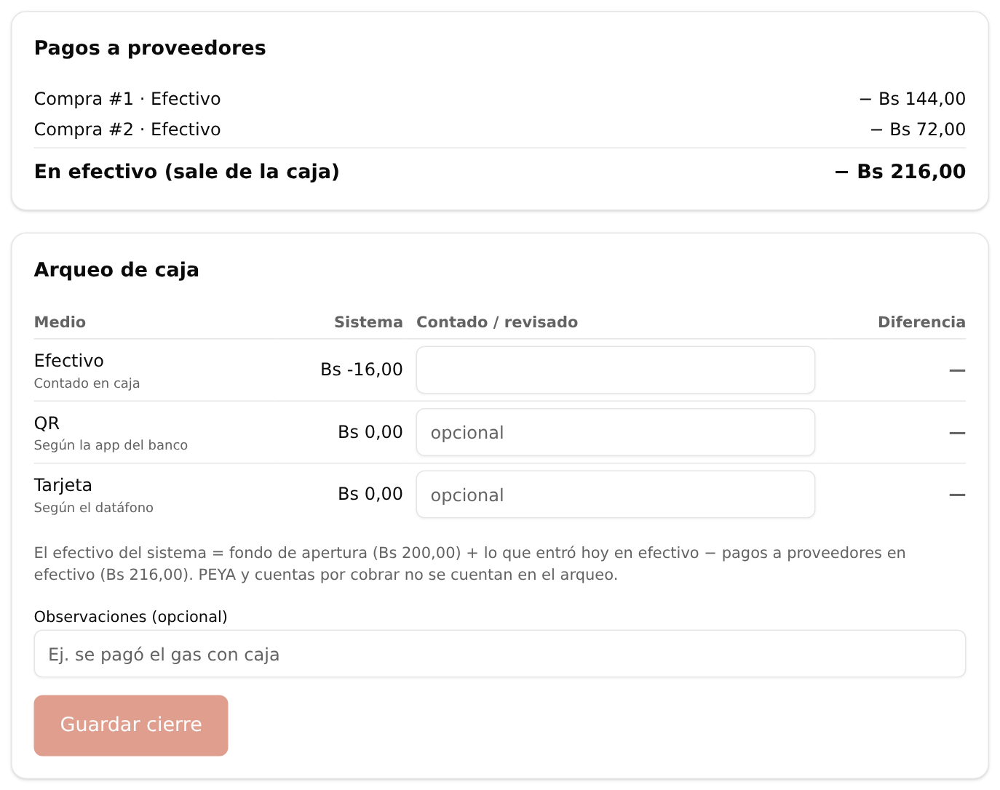
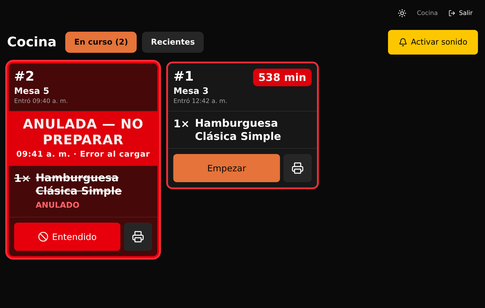
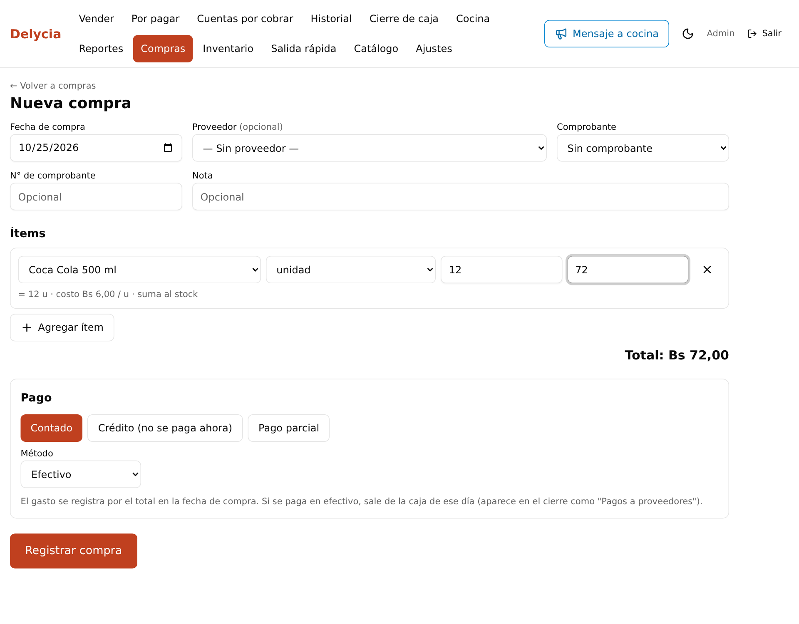
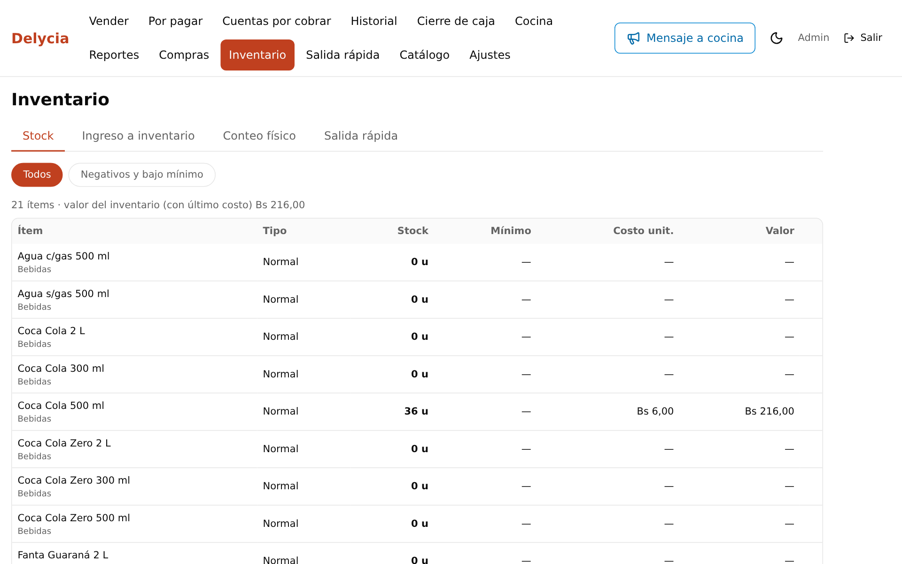
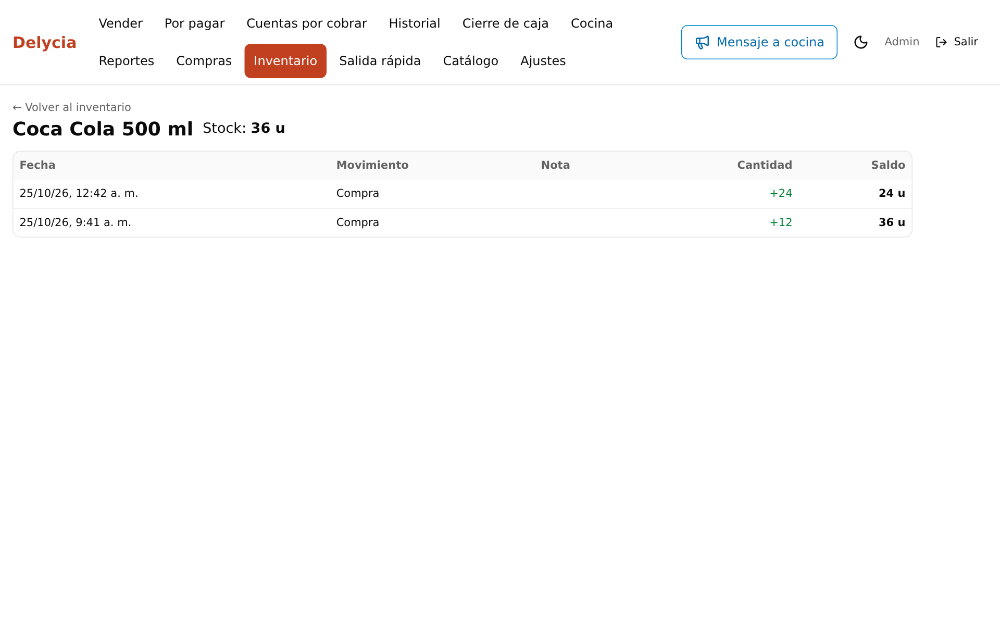
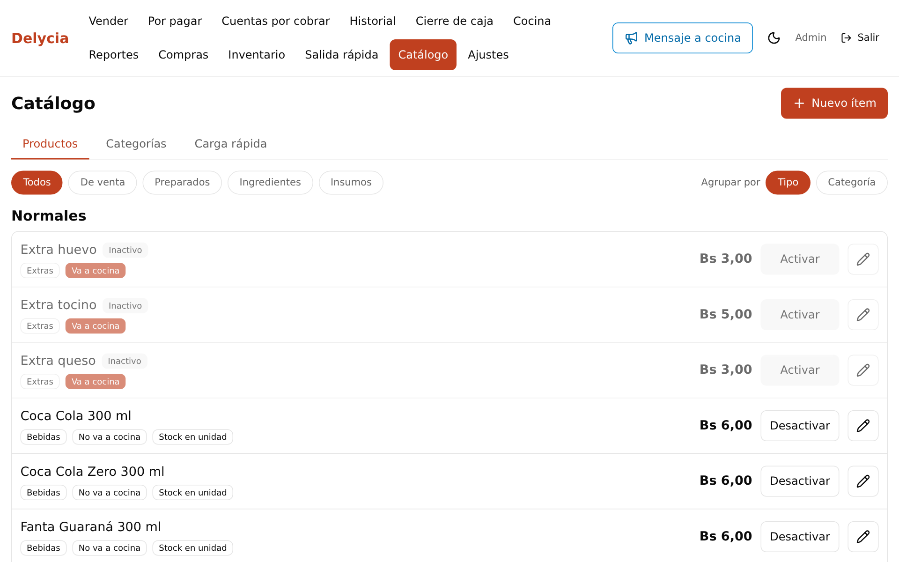
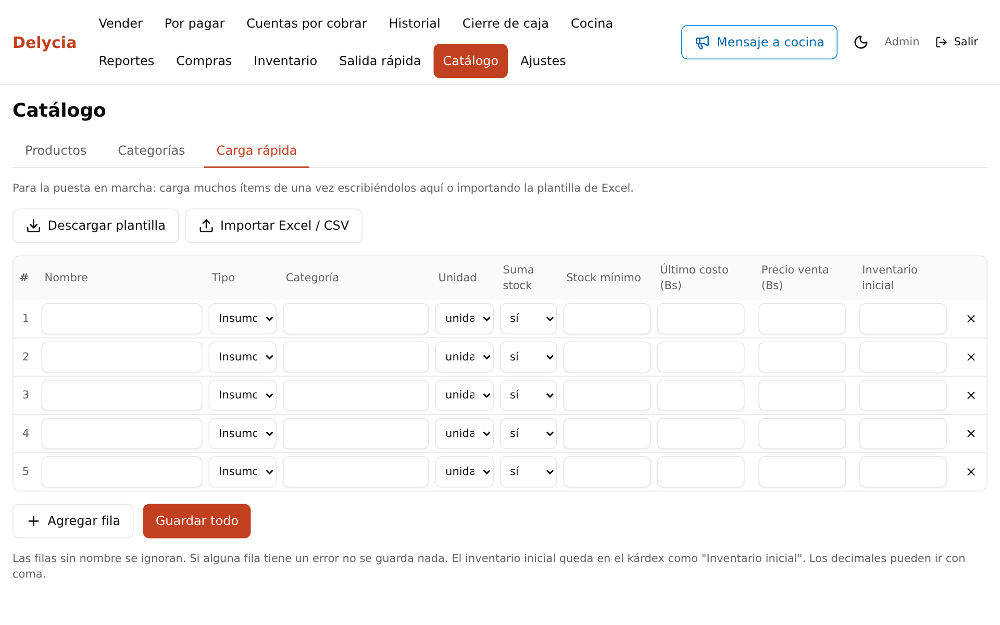
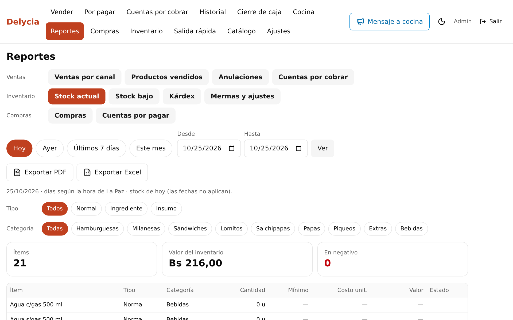

Guía rápida de los cambios recientes · Octubre 2026 · Léela completa: son 5 minutos. Las capturas son de datos de prueba.




| Sección | Qué hace |
|---|---|
| Catálogo | Cada ítem tiene un tipo: Normal (ej. bebidas), Preparado (platos), Ingrediente o Insumo. En la pantalla de venta solo aparecen Normal y Preparado. Se definen la unidad, las presentaciones de compra (ej. caja de 24) y el stock mínimo. |
| Recetas | Los Preparados llevan receta, que puede depender de si es para llevar o de los modificadores. Con la receta se calculan el costo y el margen de cada plato. |
| Carga rápida | En Catálogo → Carga rápida se descarga la plantilla Excel, se llena y se sube. Se pueden cargar muchos ítems a la vez, con su stock inicial. Si una fila tiene un error, no se carga ninguna, para que no quede nada a medias. |
| Compras | Se registran los proveedores y las compras de contado, a crédito o con pago parcial. Las deudas se ven en «Por pagar». Para anular una compra hay que anular antes sus pagos. |
| Inventario | El stock se mueve solo: suma con las compras y resta con las ventas, que descuentan al enviar a cocina o al cobrar (lo que pase primero), y vuelve si se anula. Cada ítem tiene su kárdex (historial de movimientos). Desde aquí también se hace el Ingreso a inventario (lo que se produce en cocina) y el Conteo físico: la diferencia queda como merma o sobrante, con motivo. |
| Alerta de stock | Arriba, en amarillo, se avisa si hay ítems en negativo o bajo el mínimo. |
| Reportes | Hay reportes nuevos de Stock, Stock bajo, Kárdex, Mermas, Compras y Cuentas por pagar, todos exportables a PDF y Excel. |






Delycia POS · Si algo no funciona como dice esta guía, avisa al Admin con una foto de la pantalla.